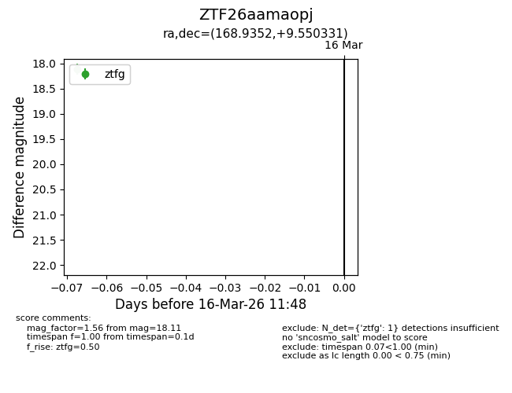
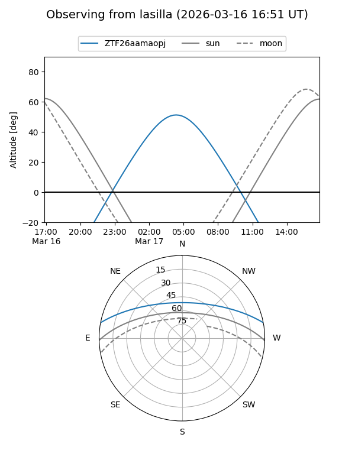
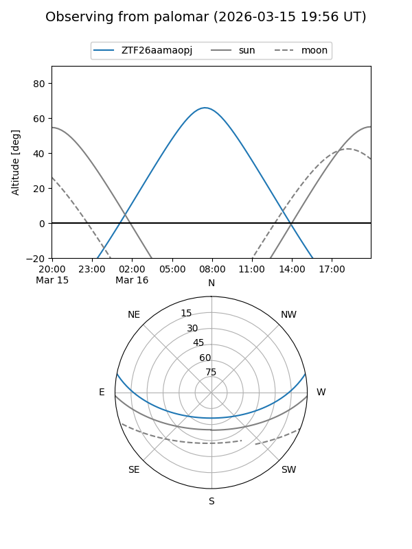

ZTF26aamaopj
Target ZTF26aamaopj at 2026-03-16 11:50
Aliases and brokers:
FINK: link
Lasair: link
ALeRCE: link
alt names
ZTF26aamaopj (ztf,fink_ztf)
Coordinates:
equatorial (ra, dec) = 168.9352,+9.55033
equatorial (HMS+DMS) = 11:15:44.44,+09:33:01.19
galactic (l, b) = (246.2996,+61.39017)
Flags:
Photometry:
last ztfg=18.11
1 ztfg detections
Lightcurve

Visibility


Additional plots